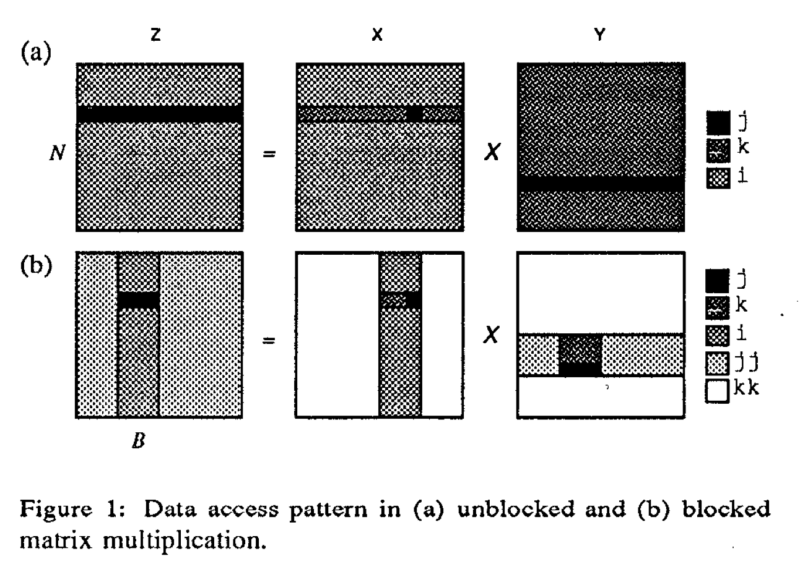
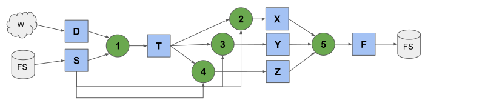
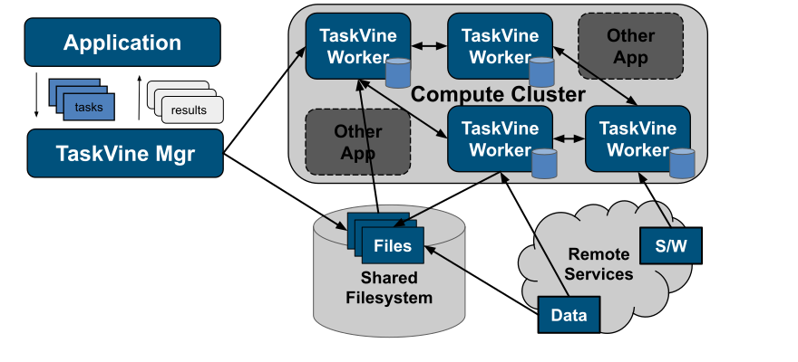
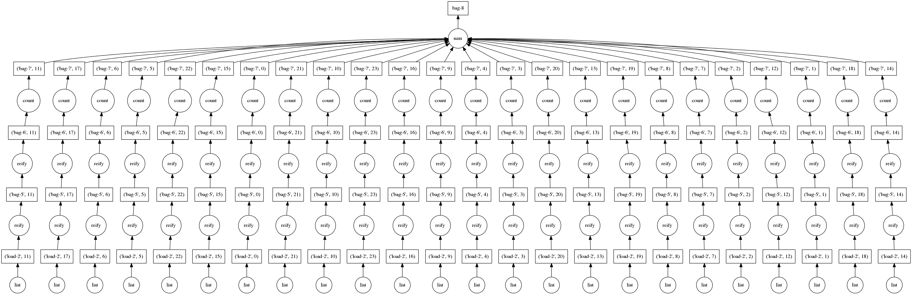
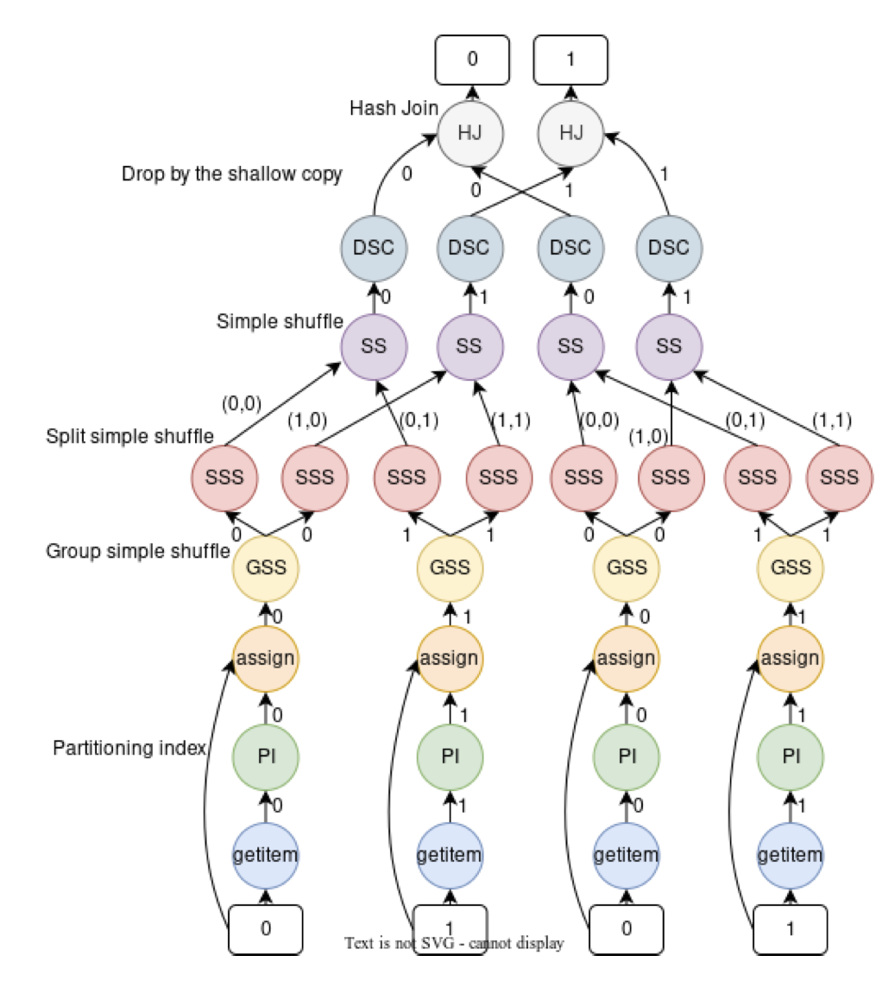
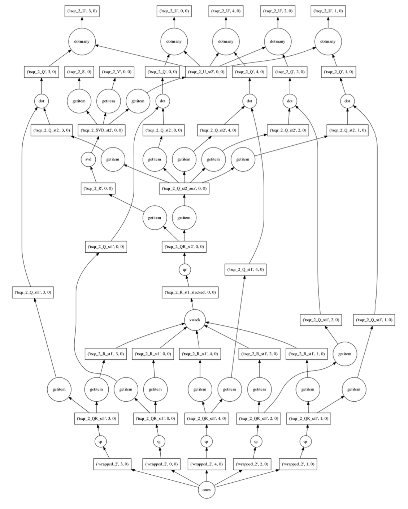
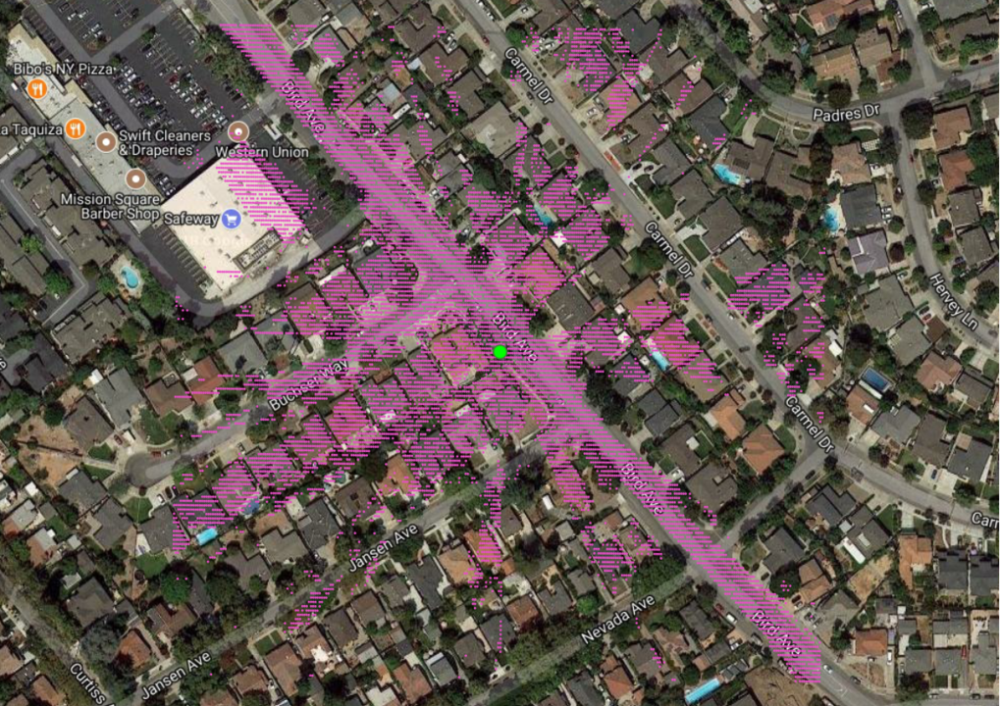
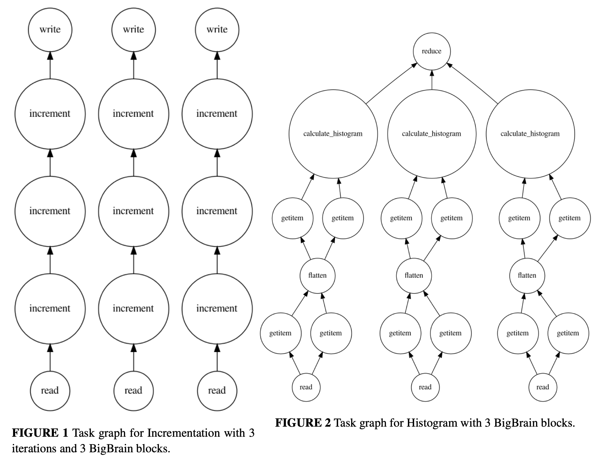
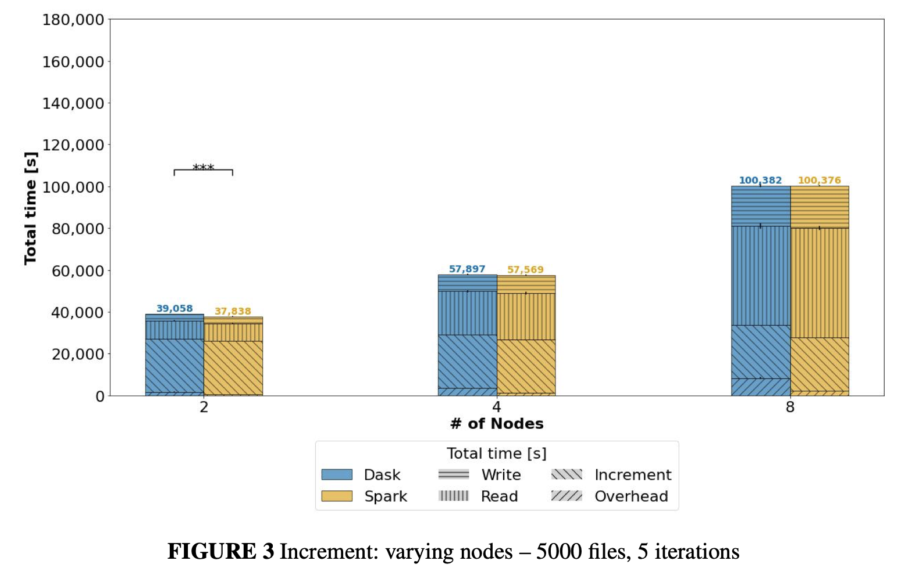
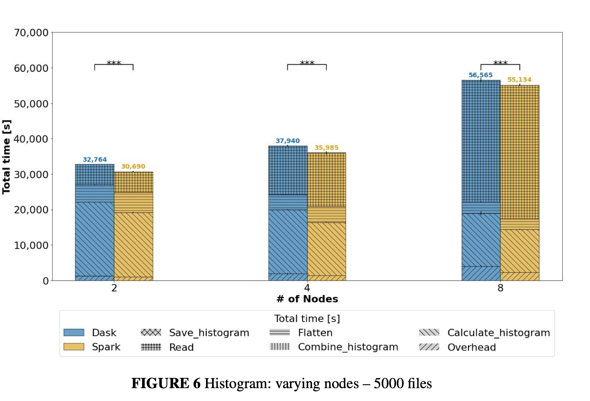

Lviv University
Parallel
We refer to algorithms that use multiple cores simultaneously as parallel.
Out-of-core
We refer to systems that efficiently use disk as extensions of memory as out-of-core.
How to execute parallel code?
Dask Graph definition
Dask computation
Dask represents a computation as a directed acyclic graph of tasks with data dependencies.
It can be said that Dask is a specification to encode such a graph using ordinary Python data structures, namely dicts, tuples, functions, and arbitrary Python values.
Examples
'x', ('x', 2, 3)(add, 'x', 'y')'x', 1, (inc, 'x'), [1, 'x', (inc, 'x')]Dask Array
The dask.array submodule uses dask graphs to create a NumPy-like library that uses all of your cores and operates on datasets that do not fit in memory.
It does this by building up a dask graph of blocked array algorithms.
Dask array functions produce Array objects that hold on to Dask graphs. These Dask graphs use several NumPy functions to achieve the full result.
Blocked Array Algorithms
Blocked algorithms compute a large result like
with many small computations like
Through tricks like this we can evaluate one large problem by solving very many small problems.
Blocked algorithm organizes a computation so that it works on contiguous chunks of data.
Blocked Array Algorithms

Note
It is well known that the memory hierarchy can be better utilized if scientific algorithms are blocked.
Blocking is also known as tiling.
In matrix multiplication example: instead of operating on individual matrix entries, the calculation is performed on submatrices.
B is a blocking factor.
Blocking features
More complex graph
z = (x + 100).sum()
z.dask
{('x', 0): (np.arange, 0, 5),
('x', 1): (np.arange, 5, 10),
('x', 2): (np.arange, 10, 15),
('y', 0): (add, ('x', 0), 100),
('y', 1): (add, ('x', 1), 100),
('y', 2): (add, ('x', 2), 100),
('z', 0): (np.sum, ('y', 0)),
('z', 1): (np.sum, ('y', 1)),
('z', 2): (np.sum, ('y', 2)),
('z',): (sum, [('z', 0), ('z', 1), ('z', 2)])}dask.array.Array objects
x and z are both dask.array.Array objects containing:
.dask.chunks.nameChunks
A normal NumPy array knows its shape, a dask array must know its shape and the shape of all of the internal NumPy blocks that make up the larger array.
These shapes can be concisely described by a tuple of tuples of integers, where each internal tuple corresponds to the lengths along a single dimension.
In the example above we have a 20 by 24 array cut into uniform blocks of size 5 by 8. The chunks attribute describing this array is the following:
Dask Array operations
+, *, exp, logsum(), mean(), std(), sum(axis=0)tensordottransposex[:100, 500:100:-2]bincount, whereGraph creation and graph scheduling are separate problems!
Current Dask scheduler is dynamic.
Current Dask scheduler logic
Out-of-core computation - which task to choose?
Description
TaskVine is a framework for building large scale data intensive dynamic workflows for:
TaskVine is our third-generation workflow system, built on our twenty years of experience creating scalable applications in fields such as
Workflow
A workflow is a collection of programs and files that are organized in a graph structure, allowing parts of the workflow to run in a parallel, reproducible way.

Steps
Architecture

Features and error handling
Coding it
Task options
As Dask Scheduler
TaskVine manager can be used as Dask scheduler:
try:
import dask
import awkward as ak
import dask_awkward as dak
import numpy as np
except ImportError:
print("You need dask, awkward, and numpy installed")
print("(e.g. conda install -c conda-forge dask dask-awkward numpy) to run this example.")
behavior: dict = {}
@ak.mixin_class(behavior)
class Point:
def distance(self, other):
return np.sqrt((self.x - other.x) ** 2 + (self.y - other.y) ** 2)
if __name__ == "__main__":
# data arrays
points1 = ak.Array([
[{"x": 1.0, "y": 1.1}, {"x": 2.0, "y": 2.2}, {"x": 3, "y": 3.3}],
[],
[{"x": 4.0, "y": 4.4}, {"x": 5.0, "y": 5.5}],
[{"x": 6.0, "y": 6.6}],
[{"x": 7.0, "y": 7.7}, {"x": 8.0, "y": 8.8}, {"x": 9, "y": 9.9}],
])
points2 = ak.Array([
[{"x": 0.9, "y": 1.0}, {"x": 2.0, "y": 2.2}, {"x": 2.9, "y": 3.0}],
[],
[{"x": 3.9, "y": 4.0}, {"x": 5.0, "y": 5.5}],
[{"x": 5.9, "y": 6.0}],
[{"x": 6.9, "y": 7.0}, {"x": 8.0, "y": 8.8}, {"x": 8.9, "y": 9.0}],
])
array1 = dak.from_awkward(points1, npartitions=3)
array2 = dak.from_awkward(points2, npartitions=3)
array1 = dak.with_name(array1, name="Point", behavior=behavior)
array2 = dak.with_name(array2, name="Point", behavior=behavior)
distance = array1.distance(array2)
m = vine.DaskVine(port=9123, ssl=True)
m.set_name("test_manager")
print(f"Listening for workers at port: {m.port}")
f = vine.Factory(manager=m)
f.cores = 4
f.max_workers = 1
f.min_workers = 1
with f:
with dask.config.set(scheduler=m.get):
result = distance.compute(resources={"cores": 1}, resources_mode="max", lazy_transfers=True)
print(f"distance = {result}")
print("Terminating workers...", end="")
print("done!")Collections
Dask Bag - Definition
A bag is an unordered collection with repeats.
It is like a Python list but does not guarantee the order of elements.
The dask.bag API contains functions like map and filter and generally follows the PyToolz API.
>>> import dask.bag as db
>>> import json
>>> b = db.from_filenames('2014-*.json.gz').map(json.loads)
>>> alices = b.filter(lambda d: d['name'] == 'Alice')
>>> alices.take(3)
({'name': 'Alice', 'city': 'LA', 'balance': 100},
{'name': 'Alice', 'city': 'LA', 'balance': 200},
{'name': 'Alice', 'city': 'NYC', 'balance': 300},)
>>> dict(alices.pluck('city').frequencies())
{'LA': 10000, 'NYC': 20000, ...}
Dask DataFrame - Definition
The dask.dataframe module implements a large dataframe out of many Pandas DataFrames.
It uses a threaded scheduler.
Partitioned datasets
The dask dataframe can compute efficiently on partitioned datasets where the different blocks are well separated along an index.
For example in time series data we may know that all of January is in one block while all of February is in another.
Join, groupby, and range queries along this index are significantly faster when working on partitioned datasets.
Dask DataFrame join

Out-of-core parallel SVD

scida.io - astrophysical simulations
Pangeo - open, reproducible, scalable geoscience. A global slice of Sea Water Temperature

Setup


